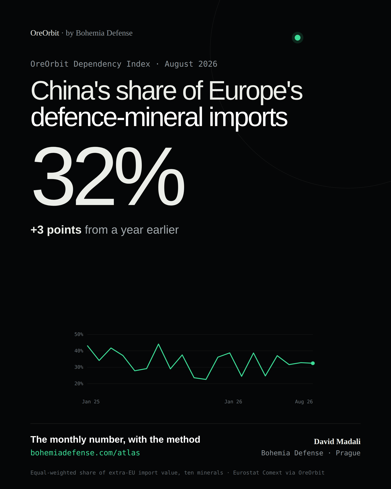
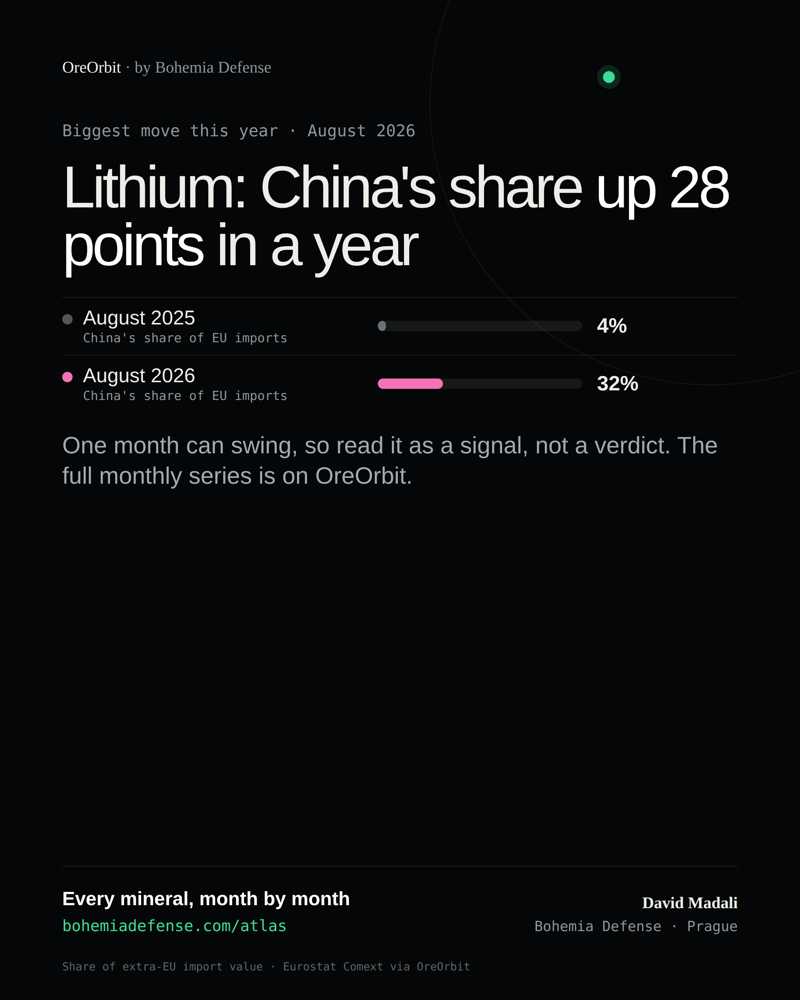
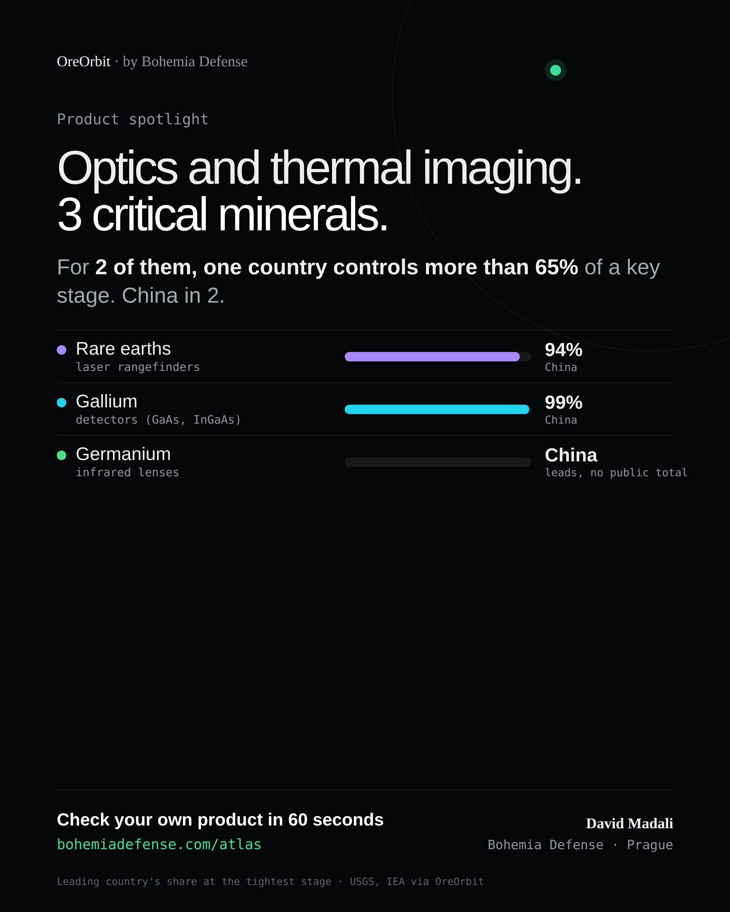

This week on LinkedIn
Three cards drawn from this week's data, with captions. Post one, put the link in the first comment, and answer every comment in the first hour.
Dependency Index, August 2026


English caption
China supplied 32% of the EU's imports of the ten critical minerals behind Europe's defence industry in August 2026, up from 29% a year earlier. That's the OreOrbit Dependency Index: each mineral counts equally, so gallium matters as much as lithium. Full breakdown and method in the first comment. #CriticalRawMaterials #DefenceIndustry #SupplyChain #Europe
Czech caption
Čína v srpnu 2026 dodala 32 % dovozu deseti kritických surovin, na kterých stojí evropský obranný průmysl, do EU; před rokem to bylo 29 %. To je Index závislosti OreOrbit: každá surovina má stejnou váhu, takže galium se počítá stejně jako lithium. Rozpad a metodika v prvním komentáři.
First comment: https://bohemiadefense.com/atlas/p/dependency-index.html
Lithium, +28 points


English caption
Lithium: China's share of the EU's imports went from 4% to 32% in a year (August 2025 to August 2026). When one supplier's share moves this much, someone in a European purchasing department either found a second source, or lost one. Monthly data per mineral in the first comment. #CriticalRawMaterials #SupplyChain #DefenceIndustry
Czech caption
Lithium: podíl Číny na dovozu do EU se za rok změnil z 4 % na 32 %. Když se podíl jednoho dodavatele pohne takhle, někdo v evropském nákupu buď našel druhý zdroj, nebo ho ztratil. Měsíční data v prvním komentáři.
First comment: https://bohemiadefense.com/atlas/p/dependency-index.html
Optics and thermal imaging


English caption
Optics and thermal imaging depend on 3 of the ten critical minerals. For 2 of them, one country controls more than 65% of a key stage, China in 2. You can check your own product type in 60 seconds, free, in OreOrbit's quick check (link in the first comment). #DefenceIndustry #CriticalRawMaterials #SupplyChain
Czech caption
Optika a termovize závisí na 3 z deseti kritických surovin. U 2 z nich ovládá jedna země přes 65 % klíčové fáze, Čína u 2. Svůj typ výrobku si prověříte za 60 sekund zdarma v rychlé kontrole OreOrbit (odkaz v prvním komentáři).
First comment: https://bohemiadefense.com/atlas/#check